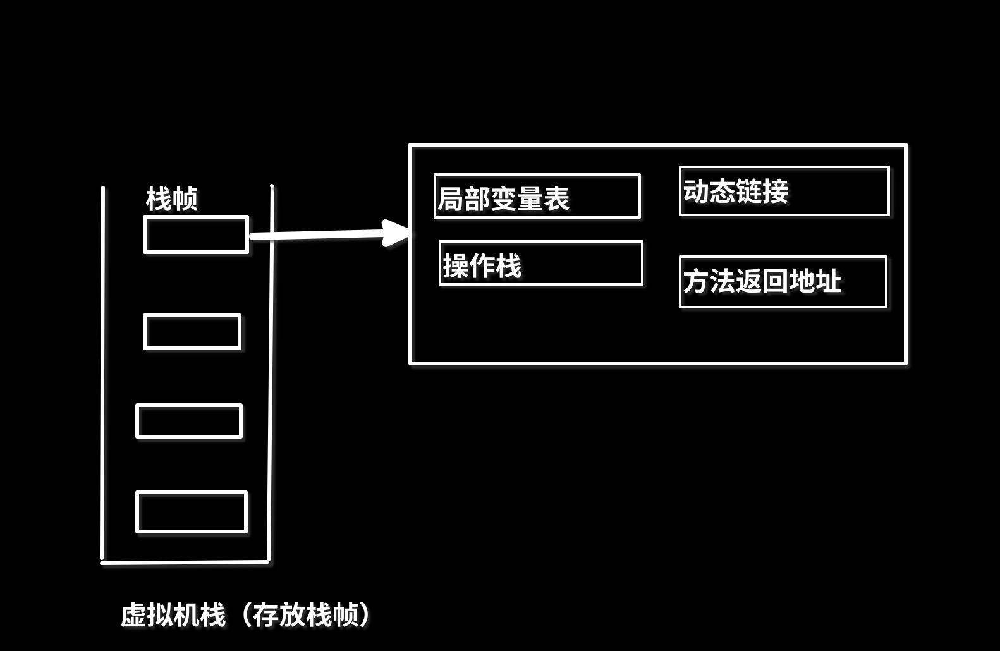

Java 内存区域
Java内存区域
内存区域图
jdk1.8以前：

jdk1.8及以后：

对于线程和进程的职责：
线程独有
- 程序计数器、本地方法栈、虚拟机栈
线程共享
- 堆区、元空间
程序计数器
- 在计组中，PC为控制器里面的一部分，它记录的是下一个指令所在的地址，用于指令跳转
在java中
- 记录的是
当前线程正在执行的字节码的指令地址，也就是行号 - 因为在多线程的情况下，每一个线程都会有自己的程序计数器，然后在线程切换的时候，用于恢复现场，继续执行
- 程序计数器是一个很小的内存空间，它仅仅记录的是一个指针
- 线程私有的，生命周期跟随线程
- 是唯一一个没有OOME的区域
虚拟机栈
栈是一个先进后出的数据结构，这就符合方法的递归调用的应用，一个方法调用另一个方法，这就符合栈的特性- 在java中，虚拟机栈应用在
存储方法调用使的局部变量、操作数等信息
异常
StackOverflowError：方法调用太深，虚拟机栈太深OutOfMemoryError：虚拟机栈申请不到内存
如图：

局部变量表
- 存储方法的形参、方法内的局部变量，每一个局部变量有一个索引值，用于快速访问
- 局部变量必须初始化才能使用
操作栈
- 可以回想一下
（2-3）*4，这个表达式的算法该怎么设计，利用两个栈，然后再利用操作符号的优先级，进行入栈、出栈的操作。还有前缀表达式、后缀表达式。
在java中
- 是字节码指令执行过程的临时存储
- 由于局部变量表存储的是变量，而操作栈就可以动态的处理变量，进行一个中转站的使用
动态链接
- 回想多态特性的运行时多态，方法的具体调用要到运行期间也能确定
- 这个动态链接存储的是量池里的该方法的引用，支持调用过程中的动态链接。
方法返回地址
- 要保证每一个方法执行完之后应该返回到正确的位置，接着上一个方法的执行。
- 此时的操作就是弹出当前栈顶的栈帧
本地方法栈
- 和虚拟机栈类似，不过本地方法栈记录的是
native方法的信息
native方法：
- 用于在jvm上调用操作系统层面的方法，由c++/c语言编写的
堆区（heap）
在该区域中，主要用来存放对象实例，也是垃圾收集器的主要工作区域。
分代回收算法，越老的区，垃圾回收频率越低（使用次数晋升）堆区划分：
- 新生代
- 老年代
逃逸分析
- 如果某些方法中的对象引用没有被返回（return）或者未被外面使用（也就是未逃逸出去），那么对象可以直接在栈上分配内存
字符串常量池
- 因为在程序中字符串的使用占大量，所以单独开辟一个区域用于快速访问内存中字符串变量的信息。
- 字符串常量池可以看作是一个map，其中value用于映射堆区中的地址
- 它的实现是一个stringtable
历史
- jdk1.7以前，是在永久代中
- jdk1.7及以后，移动到堆区中了
- 为什么：在永久代中垃圾回收效率低，没有堆区GC效率高
方法区
- 方法区是一个概念，它是一个逻辑区域，在运行时，需要读取各种类的信息，如字段信息、方法信息、常量、静态变量等等，方法区就是把这些信息划分出来的一个单独区域。
永久代、元空间
- 它俩是方法区的实现方式
- 永久代是在jvm运行时内存区域，然后容易OOM
- 元空间是在本地内存上的实现
运行时常量池
- 用来存储class文件中的各种
字面量和符号引用 - 它相当于是class文件常量池在内存中的映射
字面量：
- 是在源代码直接出现的值，可以是数字、字符
- 如 int a=12; String s=“abc”;
class文件常量池
- 常量池，名字没什么大不了，池没什么大不了
- 这个东西就是编译器编译.java文件时，生成的.class文件，这个文件可以看作一个数据结构，存放类的信息，代码的信息，常量的信息等等。这些东西能够在编译器就能够确定，就先单独存储起来，以便快速的访问
符号引用和直接引用
符号引用
直接引用